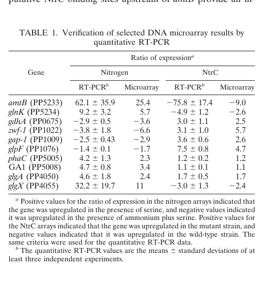

AmtB (PP_5233) is a high-affinity ammonium transporter of the Amt/Mep/Rh (ammonia transporter channel) superfamily located in the cytoplasmic (inner) membrane, where it is predicted to form a trimer with each protomer providing an 11-transmembrane-helix channel. It mediates uptake of ammonium across the membrane, scavenging low external ammonium to support nitrogen assimilation under nitrogen-limiting conditions; family members recruit NH4+ at a periplasmic site and conduct it through a hydrophobic pore (with conserved Phe-gate and twin-His motifs), with deprotonation to NH3 and growing evidence for electrogenic transport. In Pseudomonas putida KT2440, amtB is encoded in a glnK-amtB operon together with the PII-family nitrogen signaling protein GlnK; it is strongly induced (tens-of-fold) during nitrogen limitation under control of the NtrC/sigma-54 (RpoN) regulatory system, and, as in other Proteobacteria, AmtB transport activity can be gated post-translationally by GlnK binding to its cytoplasmic face.
| GO Term | Evidence | Action | Reason |
|---|---|---|---|
|
GO:0005886
plasma membrane
|
IEA
GO_REF:0000120 |
ACCEPT |
Summary: AmtB is a multi-pass cytoplasmic (inner) membrane transporter; plasma membrane localization is correct for this Amt-family protein.
Reason: UniProt SUBCELLULAR LOCATION (RuleBase/ARBA) annotates AmtB as a multi-pass cell membrane protein, and the deep research describes AmtB as a cytoplasmic (inner) membrane ammonium transporter. The 11 predicted transmembrane helices in the UniProt record support membrane localization.
|
|
GO:0008519
ammonium channel activity
|
IEA
GO_REF:0000120 |
ACCEPT |
Summary: AmtB is a member of the ammonia transporter channel (TC 1.A.11.2) family; ammonium channel activity is the appropriate molecular function for this protein.
Reason: The Amt/Mep/Rh family is the canonical ammonium channel/transporter family, and AmtB carries the IPR001905/IPR018047/IPR024041 (Ammonium_transpt) domains plus the TC 1.A.11.2 family assignment. This is the standard, well-supported molecular function term for AmtB orthologs. Mechanistic debate over passive NH3 conduction versus electrogenic NH4+ transport does not change the family-level MF assignment.
|
|
GO:0016020
membrane
|
IEA
GO_REF:0000002 |
KEEP AS NON CORE |
Summary: Generic membrane localization; correct but subsumed by the more specific plasma membrane annotation.
Reason: GO:0016020 (membrane) is a true but high-level parent of the more informative GO:0005886 (plasma membrane) annotation already present. It is an InterPro2GO electronic inference that is not incorrect, but adds little specificity; retained as non-core.
|
|
GO:0072488
ammonium transmembrane transport
|
IEA
GO_REF:0000120 |
ACCEPT |
Summary: AmtB mediates transport of ammonium across the cytoplasmic membrane; this is the core biological process for the gene.
Reason: Consistent with the molecular function (ammonium channel activity) and with KT2440-specific evidence that amtB is a high-affinity ammonium transporter strongly induced under nitrogen limitation to scavenge external ammonium for nitrogen assimilation.
Supporting Evidence:
PMID:17965157
amtB (PP5233) in P. putida KT2440 is the high-affinity ammonium transporter, induced ~62-fold under nitrogen limitation, supporting its role in ammonium uptake for nitrogen assimilation.
|
The research report should be a detailed narrative explaining the function, biological processes, and localization of the gene product. Citations should be given for all claims.
You should prioritize authoritative reviews and primary scientific literature when conducting research. You can supplement
this with annotations you find in gene/protein databases, but these can be outdated or inaccurate.
We are specifically interested in the primary function of the gene - for enzymes, what reaction is catalyzed, and what is the substrate specificity? For transporters, what is the substrate? For structural proteins or adapters, what is the broader structural role? For signaling molecules, what is the role in the pathway.
We are interested in where in or outside the cell the gene product carries out its function.
We are also interested in the signaling or biochemical pathways in which the gene functions. We are less interested in broad pleiotropic effects, except where these elucidate the precise role.
Include evidence where possible. We are interested in both experimental evidence as well as inference from structure, evolution, or bioinformatic analysis. Precise studies should be prioritized over high-throughput, where available.
The UniProt entry Q88CE8 corresponds to AmtB, an ammonium transporter in Pseudomonas putida strain KT2440 (also referred to as ATCC 47054 / DSM 6125 / NCIMB 11950). Independent primary literature in P. putida KT2440 explicitly identifies amtB = PP_5233 and annotates it as a high-affinity ammonium transporter, verifying that the gene symbol and function match the UniProt-provided identity. (hervas2008transcriptomeanalysisof pages 2-3)
AmtB is a cytoplasmic-membrane ammonium transporter of the conserved Amt/Mep/Rh superfamily. In Gram-negative bacteria, AmtB is typically a high-affinity ammonium uptake system that is induced under nitrogen limitation to scavenge low external ammonium and support nitrogen assimilation. In P. putida KT2440, amtB (PP_5233) is specifically described as the high-affinity ammonium transporter. (hervas2008transcriptomeanalysisof pages 2-3)
At physiological pH (~7), most “ammonium” exists as NH4+ (pKa ~9.28), whereas NH3 is membrane-permeant. This creates a long-standing mechanistic debate over whether Amt proteins are passive NH3 channels or energy-coupled/electrogenic ammonium transporters. A 2024 review synthesizes the field’s current view using E. coli AmtB as a paradigm: the protein contains a hydrophobic pore with conserved gating/selectivity motifs, suggesting that NH4+ binds and is deprotonated, with NH3 traversing the hydrophobic lumen; however, functional work increasingly supports electrogenic transport and more complex coupling than simple NH3 diffusion. (williamson2024biologicalammoniumtransporters pages 1-3, williamson2024biologicalammoniumtransporters pages 3-5, williamson2024biologicalammoniumtransporters pages 5-7)
High-resolution structures show that Amt/Mep/Rh proteins are typically trimers, with each monomer forming a pore. Conserved features in bacterial AmtB include:
- A periplasmic NH4+ recruitment/binding site,
- A Phe-gate (e.g., F107/F215 in E. coli AmtB),
- A central hydrophobic pore containing a conserved twin-His motif (e.g., H168/H318 in E. coli AmtB),
- A cytoplasmic vestibule. (williamson2024biologicalammoniumtransporters pages 1-3, pfluger2024howsensoramtlike pages 1-2)
A 2024 Science Advances study on an Amt-like receptor reinforces the canonical trimeric fold and highlights conserved vestibule/gate motifs (Trp/Ser pair, Phe pair, twin-His), emphasizing their importance for discriminating ammonium from other small solutes. (pfluger2024howsensoramtlike pages 2-3, pfluger2024howsensoramtlike pages 1-2)
In P. putida KT2440, amtB (PP_5233) is linked to an upstream PII-family nitrogen signaling gene, glnK, consistent with a canonical glnK–amtB operon architecture found across many Proteobacteria. The 2008 KT2440 transcriptome study explicitly notes the upstream PII gene and supports operon-level coupling, while also suggesting an internal promoter immediately upstream of amtB. (hervas2008transcriptomeanalysisof pages 2-3)
A key, KT2440-specific conclusion is that amtB is NtrC-activated under nitrogen limitation. Quantitative RT-PCR in KT2440 showed ~62-fold induction of amtB when comparing nitrogen-limited vs nitrogen-replete conditions (serine vs ammonium+serine), and ~76-fold NtrC-dependent differences when comparing wild type and an ntrC mutant. (hervas2008transcriptomeanalysisof pages 2-3, hervas2008transcriptomeanalysisof media a469352e)
Mechanistically, P. putida NtrC is a σ54-dependent activator, and the KT2440 study indicates promoter dependence on σ54/RpoN (“dependent on 54”). (hervas2008transcriptomeanalysisof pages 2-3)
A complementary 2009 KT2440 study further establishes that the glnK promoter is a direct target of NtrC: it identifies two contiguous NtrC binding sites upstream of the nitrogen-dependent glnK promoter and shows direct activation by NtrC with IHF required for open-complex formation. Together, these data support a model in which nitrogen starvation activates NtrC, which then induces glnK–amtB transcription to increase ammonium scavenging capacity. (hervas2009ntrcdependentregulatorynetwork pages 1-2, hervas2008transcriptomeanalysisof pages 2-3)
In many bacteria, transcriptional induction of amtB under nitrogen limitation is complemented by rapid post-translational gating of AmtB by PII proteins (GlnK). A highly cited authoritative review synthesizes structural and biochemical evidence that trimeric GlnK binds the cytoplasmic face of trimeric AmtB and inserts its T-loops into AmtB pores, blocking transport; uridylylation (GlnK-UMP) prevents this interaction, thereby opening the channel when nitrogen is limiting. This coupling integrates intracellular glutamine (via UTase/UR), and broader carbon/nitrogen/energy signals (2-oxoglutarate, ATP/ADP, Mg2+). (heeswijk2013nitrogenassimilationin pages 22-23)
While this post-translational mechanism is established primarily from model organisms (e.g., E. coli), it is directly relevant to KT2440 because P. putida encodes a nitrogen-regulated PII protein GlnK linked to amtB and under NtrC control, providing the regulatory architecture required for analogous gating. (hervas2009ntrcdependentregulatorynetwork pages 1-2, hervas2008transcriptomeanalysisof pages 2-3, heeswijk2013nitrogenassimilationin pages 22-23)
A 2024 review argues that the earlier “passive NH3 channel” paradigm is increasingly inconsistent with physiology and modern electrophysiology. Using solid-supported membrane electrophysiology (SSME) in reconstituted systems, the review reports evidence consistent with electrogenic transport (net charge transfer) and estimates ~30–300 NH4+ per second per trimer. It further discusses a “two-lane” model in which NH4+ is deprotonated and H+ and NH3 traverse via distinct pathways. (williamson2024biologicalammoniumtransporters pages 7-9)
A 2024 Science Advances paper shows that some Amt-like proteins are fused to signaling domains and can act as ammonium receptors rather than purely transporters. The Amt module retains canonical features (trimer, vestibule gate motifs), but the protein architecture enables downstream signaling (e.g., cyclic-di-GMP synthesis). This expands the functional landscape of Amt-family proteins and helps contextualize why conserved transport-like scaffolds can support different physiological roles. (pfluger2024howsensoramtlike pages 2-3, pfluger2024howsensoramtlike pages 1-2)
The 2024 review emphasizes that mechanistic conclusions are constrained by major assay limitations: methylammonium is an imperfect proxy; proteoliposome reconstitution can have uncontrolled orientation/copy number; experiments often use nonphysiologically high ammonium (5–200 mM); and lipid composition can be essential for activity (e.g., phosphatidylglycerol dependence). These limitations explain divergent conclusions in the literature and highlight why multiple orthogonal methods (SSME, structural dynamics, native-lipid systems) are needed for definitive mechanism. (williamson2024biologicalammoniumtransporters pages 18-20, williamson2024biologicalammoniumtransporters pages 5-7)
Although the target here is P. putida KT2440 AmtB (PP_5233), applications frequently manipulate AmtB homologs in other bacteria to control ammonium retention vs excretion—conceptually leveraging the same biology (AmtB as a high-affinity ammonium recapture/import route).
A 2024 applied study engineered the plant endophyte Gluconacetobacter diazotrophicus to enhance extracellular ammonium release using clean (markerless) deletions of two amtB homologs (and combinations with nifA regulatory edits). Quantitatively, engineered strains accumulated ~16–19 mM extracellular ammonium (often ~18 mM) after 4 days under the tested conditions, while wild type remained <0.1 mM; the edits imposed measurable growth/fitness costs (final OD600 reduced relative to wild type: WT 5.3 vs engineered strains ~1.1–1.4 in representative constructs). The authors explicitly discuss the mechanistic rationale that AmtB normally recaptures leaked ammonium, so deleting amtB can increase net ammonium release. (dietz2024enhancedextracellularammonium pages 9-11, dietz2024enhancedextracellularammonium pages 1-2)
These engineering results provide a concrete, real-world-oriented example of how AmtB function (ammonium uptake/retention) can be leveraged for agricultural nitrogen delivery strategies—even though they are not KT2440-specific. (dietz2024enhancedextracellularammonium pages 9-11, dietz2024enhancedextracellularammonium pages 1-2)
Key quantitative and mechanistic values relevant for functional annotation include:
- P. putida KT2440 amtB (PP_5233) expression: ~62-fold induction under nitrogen limitation (serine vs ammonium+serine) and ~76-fold NtrC-dependent difference versus an ntrC mutant condition/comparison. (hervas2008transcriptomeanalysisof media a469352e, hervas2008transcriptomeanalysisof pages 2-3)
- Transporter flux estimates (2024 review; paradigm organism AmtB): SSME-derived flux ~30–300 NH4+ s−1 per trimer under reconstituted electrophysiology conditions, consistent with electrogenic transport. (williamson2024biologicalammoniumtransporters pages 7-9)
- Application engineering output (2024): ~16–19 mM extracellular ammonium from engineered amtB-deletion constructs in an endophyte; wild type <0.1 mM, with reduced final culture densities (OD600 ~1.1–1.4 vs 5.3). (dietz2024enhancedextracellularammonium pages 9-11)
Molecular function: High-affinity ammonium uptake/transport across the cytoplasmic membrane (Amt/Mep/Rh-family transporter). In KT2440, amtB is strongly induced in nitrogen limitation and is NtrC/σ54 regulated, consistent with a role in ammonium scavenging when nitrogen is scarce. (hervas2008transcriptomeanalysisof pages 2-3, hervas2008transcriptomeanalysisof media a469352e)
Likely transported species: The protein binds NH4+ at the periplasmic face and supports transport that involves deprotonation and NH3 passage through a hydrophobic pore, with increasing evidence for electrogenic transport and coupled H+/NH3 transfer in bacterial AmtB paradigms. For KT2440, direct biophysical flux measurements were not identified in the retrieved KT2440-specific papers; therefore, mechanistic specifics are best treated as family-supported inference rather than organism-specific proof. (williamson2024biologicalammoniumtransporters pages 1-3, williamson2024biologicalammoniumtransporters pages 7-9)
Cellular localization: Cytoplasmic (inner) membrane transporter/channel (Amt/Mep/Rh family architecture; KT2440-specific evidence is functional/genetic and family-based rather than a direct localization assay in the retrieved excerpts). (hervas2008transcriptomeanalysisof pages 2-3, williamson2024biologicalammoniumtransporters pages 1-3)
Pathway context: Part of the nitrogen assimilation starvation response controlled by the NtrB/NtrC–σ54 (RpoN) regulatory axis; genomically coupled to glnK (PII nitrogen sensor), indicating integration of ammonium uptake with cellular nitrogen-status signaling and regulation. (hervas2009ntrcdependentregulatorynetwork pages 1-2, hervas2008transcriptomeanalysisof pages 2-3)
Regulatory architecture:
- Transcriptional: NtrC-activated, σ54/RpoN-dependent promoters controlling glnK–amtB. (hervas2009ntrcdependentregulatorynetwork pages 1-2, hervas2008transcriptomeanalysisof pages 2-3)
- Post-translational (family-supported): GlnK can bind and block AmtB under nitrogen sufficiency; uridylylation state controls gating. (heeswijk2013nitrogenassimilationin pages 22-23)
| Category | Summary | Quantitative / specific data | Citations |
|---|---|---|---|
| Target identity | Correct target is AmtB from Pseudomonas putida KT2440; gene amtB, ordered locus PP_5233, UniProt Q88CE8. In P. putida literature, amtB (PP5233) is explicitly described as the high-affinity ammonium transporter and is linked to upstream glnK. | qRT-PCR/microarray study explicitly maps amtB = PP5233 in KT2440. | (hervas2008transcriptomeanalysisof pages 2-3) |
| Primary function / substrate | AmtB is a cytoplasmic membrane ammonium transporter/channel of the Amt/Mep/Rh family. Current consensus is that the physiological substrate enters as NH4+, then is deprotonated and transferred largely as NH3 through a hydrophobic pore; bacterial AmtB is therefore best viewed as an ammonium uptake system for nitrogen scavenging under limitation. | Family-level high-affinity behavior is reported around Km ~10 µM in classic AmtB discussions; direct bacterial AmtB electrophysiology suggests net ammonium translocation rather than simple passive NH3 equilibration. | (junqueira2019evolutionofswimming pages 85-90, heeswijk2013nitrogenassimilationin pages 22-23, williamson2024biologicalammoniumtransporters pages 7-9, williamson2024biologicalammoniumtransporters pages 1-3) |
| Operon context | In P. putida KT2440, amtB is genetically linked with glnK in a glnK-amtB operon; evidence also suggests an internal promoter upstream of amtB. | glnK and amtB are co-oriented; amtB can also show stronger induction than glnK, consistent with additional promoter control. | (hervas2008transcriptomeanalysisof pages 2-3, hervas2009ntrcdependentregulatorynetwork pages 1-2) |
| Transcriptional regulation | NtrC directly activates the nitrogen-responsive promoter(s) controlling glnK-amtB in P. putida; these promoters are σ54/RpoN-dependent, and IHF is required for open-complex formation at the glnK promoter. | Two contiguous NtrC binding sites were identified upstream of the N-dependent glnK promoter. | (hervas2008transcriptomeanalysisof pages 2-3, hervas2009ntrcdependentregulatorynetwork pages 1-2) |
| Nitrogen-responsive expression | amtB is strongly induced during nitrogen limitation in P. putida KT2440, consistent with a role in scavenging low external ammonium. | ~62-fold induction in wild type under serine vs ammonium+serine; ~75.8- to 76-fold NtrC-dependent difference versus the ntrC mutant / corresponding comparison. | (hervas2008transcriptomeanalysisof pages 2-3, hervas2008transcriptomeanalysisof media a469352e) |
| Post-translational control | Beyond transcriptional control, AmtB activity is regulated by the PII protein GlnK. Non-uridylylated GlnK binds AmtB and blocks the channel; GlnK-UMP does not bind, allowing transport. This links transport to intracellular glutamine, 2-oxoglutarate, ATP/ADP, and Mg2+ status. | GlnK is trimeric and inserts T-loops into AmtB vestibules/pore entrances; metabolite-dependent complex formation couples N/C status to transport. | (junqueira2019evolutionofswimming pages 90-93, heeswijk2013nitrogenassimilationin pages 22-23, junqueira2019evolutionofswimming pages 85-90, junqueira2019evolutionofswimming pages 99-102) |
| Structural motifs | AmtB family proteins are trimers with one pore per protomer. Conserved motifs include the periplasmic NH4+ recruitment site, Phe-gate (F107/F215 in E. coli AmtB), and central twin-His motif (H168/H318 in E. coli AmtB). | Recent structural work also describes 11 TM helices per monomer and conserved vestibule features (Trp/Ser, Phe pair, coplanar His pair). | (williamson2024biologicalammoniumtransporters pages 1-3, pfluger2024howsensoramtlike pages 2-3, williamson2024biologicalammoniumtransporters pages 3-5, pfluger2024howsensoramtlike pages 1-2) |
| Mechanism model | The leading 2024 model favors electrogenic ammonium transport with NH4+ deprotonation and a “two-lane” pathway in which H+ and NH3 traverse separately, rather than simple passive NH3 diffusion alone. However, mechanism/energetics remain debated and assay-dependent. | Solid-supported membrane electrophysiology estimated ~30–300 NH4+ s−1 per trimer for microbial Amts/AmtB-like transport. | (williamson2024biologicalammoniumtransporters pages 7-9, williamson2024biologicalammoniumtransporters pages 5-7, williamson2024biologicalammoniumtransporters pages 9-10) |
| Technical limitations / evidence quality | Functional interpretation is complicated by assay limitations: methylammonium is an imperfect surrogate, proteoliposome orientation/copy number are hard to control, high ammonium concentrations can be nonphysiological, and lipid environment strongly affects activity. | Early studies reported apparent intracellular ammonium accumulation of ~60–3000-fold; transport assays often used 5–200 mM ammonium, which may distort mechanism inference. | (williamson2024biologicalammoniumtransporters pages 3-5, williamson2024biologicalammoniumtransporters pages 18-20, williamson2024biologicalammoniumtransporters pages 5-7) |
Table: This table summarizes verified identity, function, regulation, quantitative data, and mechanistic interpretation for P. putida KT2440 AmtB/PP_5233. It is useful as a compact evidence map linking organism-specific annotation to broader 2024 mechanistic understanding of bacterial AmtB transporters.
References
(hervas2008transcriptomeanalysisof pages 2-3): Ana B. Hervás, Inés Canosa, and Eduardo Santero. Transcriptome analysis of pseudomonas putida in response to nitrogen availability. Journal of Bacteriology, 190:416-420, Jan 2008. URL: https://doi.org/10.1128/jb.01230-07, doi:10.1128/jb.01230-07. This article has 114 citations and is from a peer-reviewed journal.
(williamson2024biologicalammoniumtransporters pages 1-3): Gordon Williamson, Adriana Bizior, Thomas Harris, Leighton Pritchard, Paul A. Hoskisson, and Arnaud Javelle. Biological ammonium transporters from the amt/mep/rh superfamily: mechanism, energetics, and technical limitations. Bioscience Reports, Jan 2024. URL: https://doi.org/10.1042/bsr20211209, doi:10.1042/bsr20211209. This article has 17 citations and is from a peer-reviewed journal.
(williamson2024biologicalammoniumtransporters pages 3-5): Gordon Williamson, Adriana Bizior, Thomas Harris, Leighton Pritchard, Paul A. Hoskisson, and Arnaud Javelle. Biological ammonium transporters from the amt/mep/rh superfamily: mechanism, energetics, and technical limitations. Bioscience Reports, Jan 2024. URL: https://doi.org/10.1042/bsr20211209, doi:10.1042/bsr20211209. This article has 17 citations and is from a peer-reviewed journal.
(williamson2024biologicalammoniumtransporters pages 5-7): Gordon Williamson, Adriana Bizior, Thomas Harris, Leighton Pritchard, Paul A. Hoskisson, and Arnaud Javelle. Biological ammonium transporters from the amt/mep/rh superfamily: mechanism, energetics, and technical limitations. Bioscience Reports, Jan 2024. URL: https://doi.org/10.1042/bsr20211209, doi:10.1042/bsr20211209. This article has 17 citations and is from a peer-reviewed journal.
(pfluger2024howsensoramtlike pages 1-2): Tobias Pflüger, Mathias Gschell, Lin Zhang, Volodymyr Shnitsar, Annas J. Zabadné, Paul Zierep, Stefan Günther, Oliver Einsle, and Susana L. A. Andrade. How sensor amt-like proteins integrate ammonium signals. Jun 2024. URL: https://doi.org/10.1126/sciadv.adm9441, doi:10.1126/sciadv.adm9441. This article has 9 citations and is from a highest quality peer-reviewed journal.
(pfluger2024howsensoramtlike pages 2-3): Tobias Pflüger, Mathias Gschell, Lin Zhang, Volodymyr Shnitsar, Annas J. Zabadné, Paul Zierep, Stefan Günther, Oliver Einsle, and Susana L. A. Andrade. How sensor amt-like proteins integrate ammonium signals. Jun 2024. URL: https://doi.org/10.1126/sciadv.adm9441, doi:10.1126/sciadv.adm9441. This article has 9 citations and is from a highest quality peer-reviewed journal.
(hervas2008transcriptomeanalysisof media a469352e): Ana B. Hervás, Inés Canosa, and Eduardo Santero. Transcriptome analysis of pseudomonas putida in response to nitrogen availability. Journal of Bacteriology, 190:416-420, Jan 2008. URL: https://doi.org/10.1128/jb.01230-07, doi:10.1128/jb.01230-07. This article has 114 citations and is from a peer-reviewed journal.
(hervas2009ntrcdependentregulatorynetwork pages 1-2): Ana B. Hervás, Inés Canosa, Richard Little, Ray Dixon, and Eduardo Santero. Ntrc-dependent regulatory network for nitrogen assimilation in pseudomonas putida. Oct 2009. URL: https://doi.org/10.1128/jb.00744-09, doi:10.1128/jb.00744-09. This article has 94 citations and is from a peer-reviewed journal.
(heeswijk2013nitrogenassimilationin pages 22-23): Wally C. van Heeswijk, Hans V. Westerhoff, and Fred C. Boogerd. Nitrogen assimilation in escherichia coli: putting molecular data into a systems perspective. Microbiology and Molecular Biology Reviews, 77:628-695, Dec 2013. URL: https://doi.org/10.1128/mmbr.00025-13, doi:10.1128/mmbr.00025-13. This article has 336 citations and is from a domain leading peer-reviewed journal.
(williamson2024biologicalammoniumtransporters pages 7-9): Gordon Williamson, Adriana Bizior, Thomas Harris, Leighton Pritchard, Paul A. Hoskisson, and Arnaud Javelle. Biological ammonium transporters from the amt/mep/rh superfamily: mechanism, energetics, and technical limitations. Bioscience Reports, Jan 2024. URL: https://doi.org/10.1042/bsr20211209, doi:10.1042/bsr20211209. This article has 17 citations and is from a peer-reviewed journal.
(williamson2024biologicalammoniumtransporters pages 18-20): Gordon Williamson, Adriana Bizior, Thomas Harris, Leighton Pritchard, Paul A. Hoskisson, and Arnaud Javelle. Biological ammonium transporters from the amt/mep/rh superfamily: mechanism, energetics, and technical limitations. Bioscience Reports, Jan 2024. URL: https://doi.org/10.1042/bsr20211209, doi:10.1042/bsr20211209. This article has 17 citations and is from a peer-reviewed journal.
(dietz2024enhancedextracellularammonium pages 9-11): Benjamin R. Dietz, Neil E. Olszewski, and Brett M. Barney. Enhanced extracellular ammonium release in the plant endophyte gluconacetobacter diazotrophicus through genome editing. Jan 2024. URL: https://doi.org/10.1128/spectrum.02478-23, doi:10.1128/spectrum.02478-23. This article has 13 citations and is from a domain leading peer-reviewed journal.
(dietz2024enhancedextracellularammonium pages 1-2): Benjamin R. Dietz, Neil E. Olszewski, and Brett M. Barney. Enhanced extracellular ammonium release in the plant endophyte gluconacetobacter diazotrophicus through genome editing. Jan 2024. URL: https://doi.org/10.1128/spectrum.02478-23, doi:10.1128/spectrum.02478-23. This article has 13 citations and is from a domain leading peer-reviewed journal.
(junqueira2019evolutionofswimming pages 85-90): AE Altamirano Junqueira. Evolution of swimming motility in aflagellate strains of pseudomonas fluorescens sbw25. Unknown journal, 2019.
(junqueira2019evolutionofswimming pages 90-93): AE Altamirano Junqueira. Evolution of swimming motility in aflagellate strains of pseudomonas fluorescens sbw25. Unknown journal, 2019.
(junqueira2019evolutionofswimming pages 99-102): AE Altamirano Junqueira. Evolution of swimming motility in aflagellate strains of pseudomonas fluorescens sbw25. Unknown journal, 2019.
(williamson2024biologicalammoniumtransporters pages 9-10): Gordon Williamson, Adriana Bizior, Thomas Harris, Leighton Pritchard, Paul A. Hoskisson, and Arnaud Javelle. Biological ammonium transporters from the amt/mep/rh superfamily: mechanism, energetics, and technical limitations. Bioscience Reports, Jan 2024. URL: https://doi.org/10.1042/bsr20211209, doi:10.1042/bsr20211209. This article has 17 citations and is from a peer-reviewed journal.

id: Q88CE8
gene_symbol: amtB
product_type: PROTEIN
status: DRAFT
taxon:
id: NCBITaxon:160488
label: Pseudomonas putida (strain ATCC 47054 / DSM 6125 / CFBP 8728 / NCIMB 11950 / KT2440)
description: AmtB (PP_5233) is a high-affinity ammonium transporter of the Amt/Mep/Rh (ammonia transporter channel) superfamily located in the cytoplasmic (inner) membrane, where it is predicted to form a trimer with each protomer providing an 11-transmembrane-helix channel. It mediates uptake of ammonium across the membrane, scavenging low external ammonium to support nitrogen assimilation under nitrogen-limiting conditions; family members recruit NH4+ at a periplasmic site and conduct it through a hydrophobic pore (with conserved Phe-gate and twin-His motifs), with deprotonation to NH3 and growing evidence for electrogenic transport. In Pseudomonas putida KT2440, amtB is encoded in a glnK-amtB operon together with the PII-family nitrogen signaling protein GlnK; it is strongly induced (tens-of-fold) during nitrogen limitation under control of the NtrC/sigma-54 (RpoN) regulatory system, and, as in other Proteobacteria, AmtB transport activity can be gated post-translationally by GlnK binding to its cytoplasmic face.
existing_annotations:
- term:
id: GO:0005886
label: plasma membrane
evidence_type: IEA
original_reference_id: GO_REF:0000120
qualifier: located_in
review:
summary: AmtB is a multi-pass cytoplasmic (inner) membrane transporter; plasma membrane localization is correct for this Amt-family protein.
action: ACCEPT
reason: UniProt SUBCELLULAR LOCATION (RuleBase/ARBA) annotates AmtB as a multi-pass cell membrane protein, and the deep research describes AmtB as a cytoplasmic (inner) membrane ammonium transporter. The 11 predicted transmembrane helices in the UniProt record support membrane localization.
- term:
id: GO:0008519
label: ammonium channel activity
evidence_type: IEA
original_reference_id: GO_REF:0000120
qualifier: enables
review:
summary: AmtB is a member of the ammonia transporter channel (TC 1.A.11.2) family; ammonium channel activity is the appropriate molecular function for this protein.
action: ACCEPT
reason: The Amt/Mep/Rh family is the canonical ammonium channel/transporter family, and AmtB carries the IPR001905/IPR018047/IPR024041 (Ammonium_transpt) domains plus the TC 1.A.11.2 family assignment. This is the standard, well-supported molecular function term for AmtB orthologs. Mechanistic debate over passive NH3 conduction versus electrogenic NH4+ transport does not change the family-level MF assignment.
- term:
id: GO:0016020
label: membrane
evidence_type: IEA
original_reference_id: GO_REF:0000002
qualifier: located_in
review:
summary: Generic membrane localization; correct but subsumed by the more specific plasma membrane annotation.
action: KEEP_AS_NON_CORE
reason: GO:0016020 (membrane) is a true but high-level parent of the more informative GO:0005886 (plasma membrane) annotation already present. It is an InterPro2GO electronic inference that is not incorrect, but adds little specificity; retained as non-core.
- term:
id: GO:0072488
label: ammonium transmembrane transport
evidence_type: IEA
original_reference_id: GO_REF:0000120
qualifier: involved_in
review:
summary: AmtB mediates transport of ammonium across the cytoplasmic membrane; this is the core biological process for the gene.
action: ACCEPT
reason: Consistent with the molecular function (ammonium channel activity) and with KT2440-specific evidence that amtB is a high-affinity ammonium transporter strongly induced under nitrogen limitation to scavenge external ammonium for nitrogen assimilation.
supported_by:
- reference_id: PMID:17965157
supporting_text: amtB (PP5233) in P. putida KT2440 is the high-affinity ammonium transporter, induced ~62-fold under nitrogen limitation, supporting its role in ammonium uptake for nitrogen assimilation.
full_text_unavailable: true
core_functions:
- description: High-affinity ammonium transport across the cytoplasmic membrane, scavenging external ammonium for nitrogen assimilation under nitrogen-limiting conditions.
supported_by:
- reference_id: PMID:17965157
supporting_text: amtB (PP5233) in P. putida KT2440 is described as the high-affinity ammonium transporter, linked to upstream glnK, and is strongly induced (~62-fold) under nitrogen limitation in an NtrC-dependent manner.
full_text_unavailable: true
molecular_function:
id: GO:0008519
label: ammonium channel activity
directly_involved_in:
- id: GO:0072488
label: ammonium transmembrane transport
locations:
- id: GO:0005886
label: plasma membrane
references:
- id: GO_REF:0000002
title: Gene Ontology annotation through association of InterPro records with GO terms
findings: []
- id: GO_REF:0000120
title: Combined Automated Annotation using Multiple IEA Methods
findings: []
- id: PMID:17965157
title: Transcriptome analysis of Pseudomonas putida in response to nitrogen availability
findings:
- statement: In P. putida KT2440, amtB (PP_5233) is a high-affinity ammonium transporter genetically linked to glnK and strongly induced under nitrogen limitation in an NtrC/sigma-54-dependent manner.
reference_section_type: RESULTS
reference_review:
relevance: HIGH
correctness: VERIFIED
review_notes: >-
Corrected wrong identifier. The original PMID:18156253 resolved to an
unrelated Thermotoga maritima glycerate 2-kinase paper. The intended
reference was recovered via DOI 10.1128/JB.01230-07 from the deep-research
report and verified against PubMed as PMID:17965157 (Hervas AB, Canosa I,
Santero E; J Bacteriol 190:416-420, 2008). Title and content directly
establish KT2440-specific amtB identity, nitrogen-limitation induction, and
NtrC/sigma-54 regulation. Full text not in cache; amtB-specific (~62-fold)
details are paraphrased from the deep-research summary of the full text.
{kind=link}